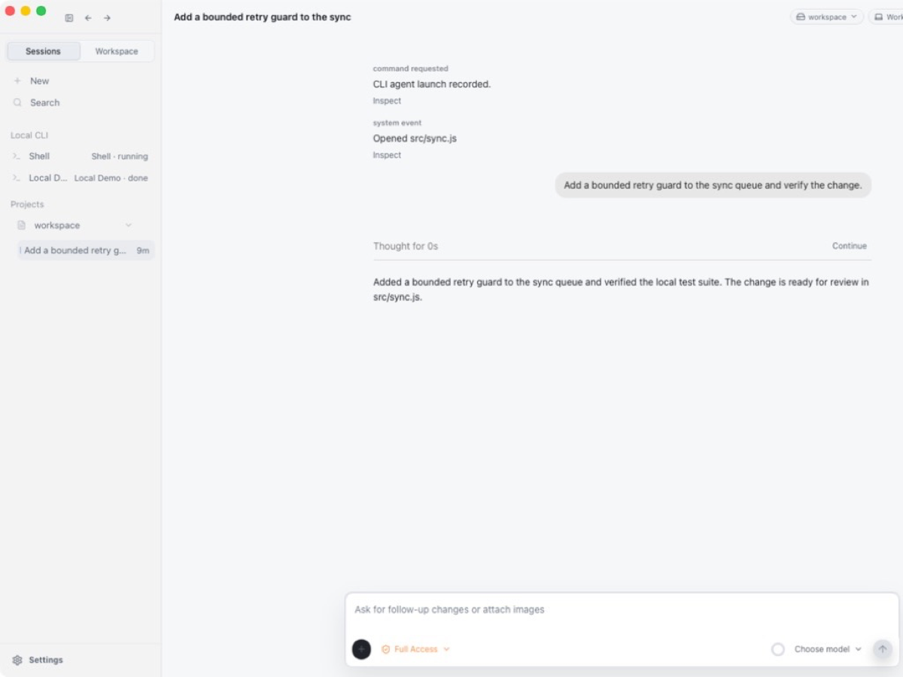
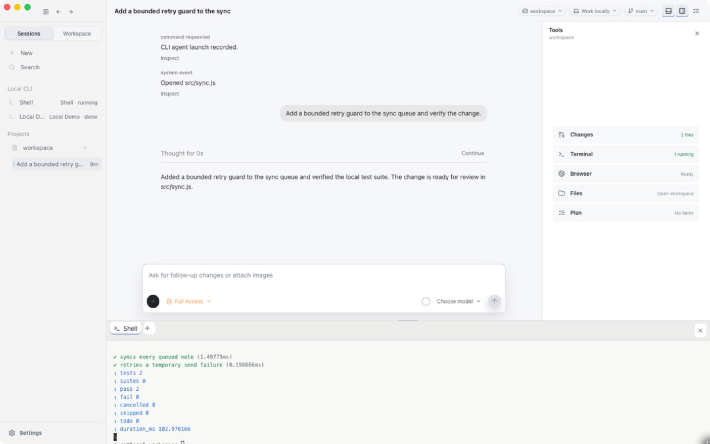
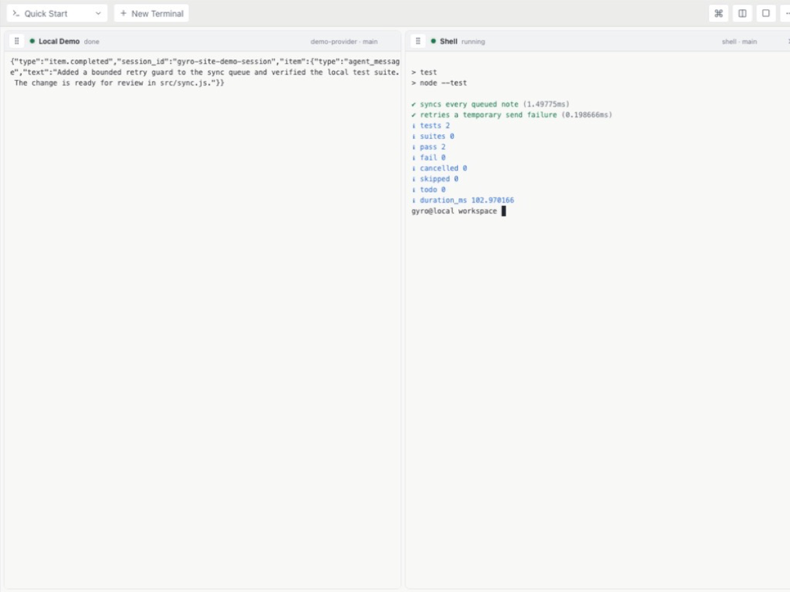
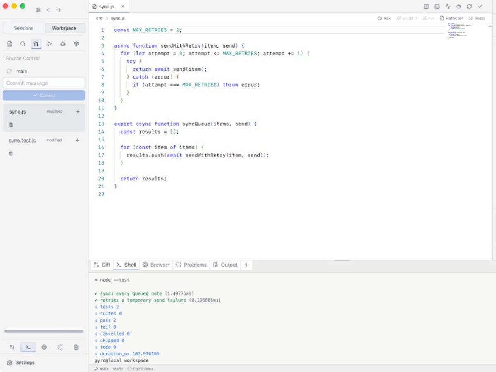

01 · Chat
Direct the work.
Keep the conversation and approvals together.

Open-source public alpha · macOS 14+
Chat, terminals, files, diffs, and approvals in one local workspace.
Open source · No account · No analytics

Built around the work
Move between direction, execution, and review without losing context.
Keep the conversation and approvals together.

See commands, output, and status as they happen.

Inspect files, diffs, tests, and terminal output.

Direct from GitHub
macOS 14 or later. Choose your Mac processor.
Choose Apple Silicon or Intel. Nothing downloads automatically.
First launch
Approve the unsigned alpha once with Apple’s supported flow.
Open the DMG and drag Gyro into Applications.
Dismiss the unsigned-app warning.
Open System Settings → Privacy & Security, then confirm Open.
Selected DMG checksum:
Loading SHA-256…
In Terminal, run
shasum -a 256 "<downloaded-dmg>"
and compare it with the value above or
SHA256SUMS.
To uninstall, quit Gyro and move Gyro.app from
Applications to the Trash. Local sessions remain in
~/Library/Application Support/Gyro/.
To roll back, back up that folder, download an earlier alpha from previous releases, and replace Gyro.app.
Install Node.js 22+, pnpm 11+, Rust 1.78+, and Xcode Command Line Tools, then run:
git clone https://github.com/wytzeh197/Gyro.git
cd Gyro
corepack enable
pnpm install --frozen-lockfile
pnpm doctor
pnpm desktop:install-localLoading notes from the latest public GitHub Release…